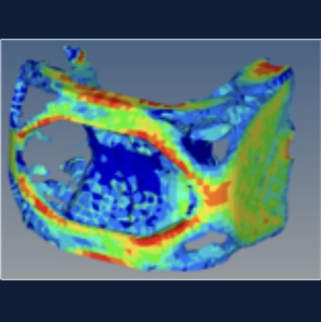
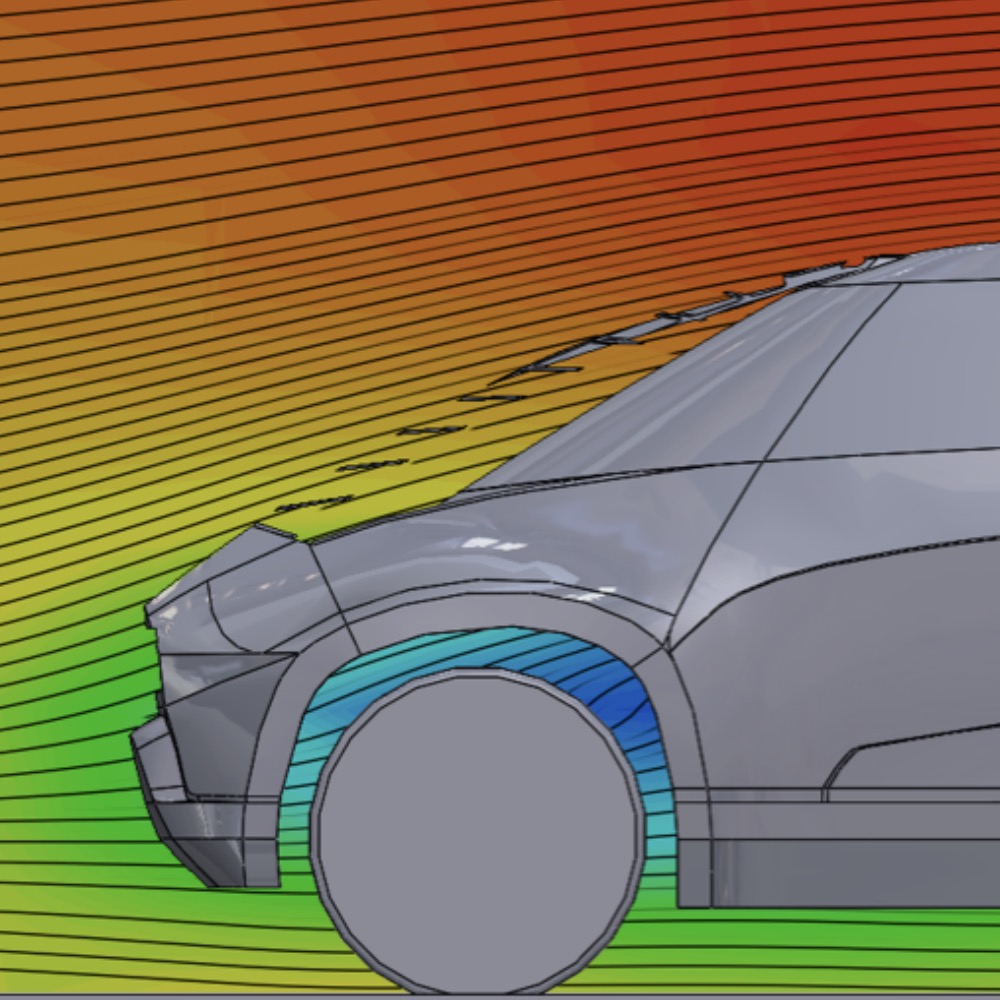

The suicide door concept was chosen after performing hueristic evaluations around buck and iterating through number of door concepts. The concept was chosen to provide large b-pillarless entry to facsilate activities like work on the go and easy loading/unloading.
TOYOTA UBOX - An Urban Utility Vehicle

Deep Orange 6 is the 6th generation vehicle, sponsored by Toyota (2014-2015) developed as an urban utility vehicle for the Scion brand in the year 2020. A diverse 18-member team, with 16 graduate students from CUICAR and 2 from Art Center College of Design was established, with backgrounds across engineering, design, and human factors. AutoPacific data were first examined to define personas on the basis of their demographics and psychographics. The resulting market research, benchmarking, and brand essence studies were then converted to consumer requirements. These established, technical specifications, which formed the foundation of the concept’s Unique Selling Propositions (USPs). The various sub-systems within the vehicle were then developed; a systems integration approach balanced design, engineering, and project (cost, weight, and timing) compromises. Design reviews and presentations were used to update industry partners, and an evidence book documented the development and execution of the project.
Ideation
I participated in story boarding to understand target customers, brainstorming to generate ideas to deliver key experiences and interacting with vehicle buck to put myself in customer's shoes.
The process was used to define vehicle attributes. I was responsible to deliver vehicle closures which can fascilate activities of target customers and design A+ pillars which keep vehicles exterior appealing while not hampering the visibility.
Closures Development
The doors were designed with carbon fiber reinforced plastic (CFRP) interior panel, backed with an aluminum frame on b-side. The CFRP panel could be an interior door trim as well as a structural member to reduce part count and overall weight. The side impact crash box and B-pillar were integrated into the doors to allow easier ingress/egress and obstruction free entry.
Finite element analysis was performed to test strength of the doors for number of load cases like door sag, header stiffness and beltline stiffness. The image on the left shows the beltine stiffness condition where pairs of loads with magnitude +/- 200N were applied laterally at the middle of the beltline of the door (inside and outside) while keeping door hinge and latch constrained. In this test, the maximum deflection at middle of the beltline was measured. The maximum deflection of .1mm for the front door and .25mm for the rear door were achieved.
Topology Optimization of The Door Hinge
The rear door hinge geometry was optimized to maximize stiffness and minimize weight using topology optimization techniques. At the end, around 31% of reduction in mass was achieved.

Flush Door Handle Concept
A novel door handle was designed to achieve a flush exterior surface. The door handle cover could be retracted remotely using the key-fob to provide hand access to the door latch. From CFD analysis, It was found that the coefficient of aerodynamic drag reduced from 0.41 to 0.36 due to the flush handle concept.

A-plus Pillar Concept
A-plus pillars were designed to keep continuity of design lines from the front hood to top of the winshield, allowing windshield to be reccessed and avoiding typical van-like look. A-plus pillar had a complex geometry manifactured with the help of 3D printing. They provided unobstructed view to the driver (left) this made them asymetrical in design while deceivingly looked symetric when viewed from the outside (right).
Prototype Building